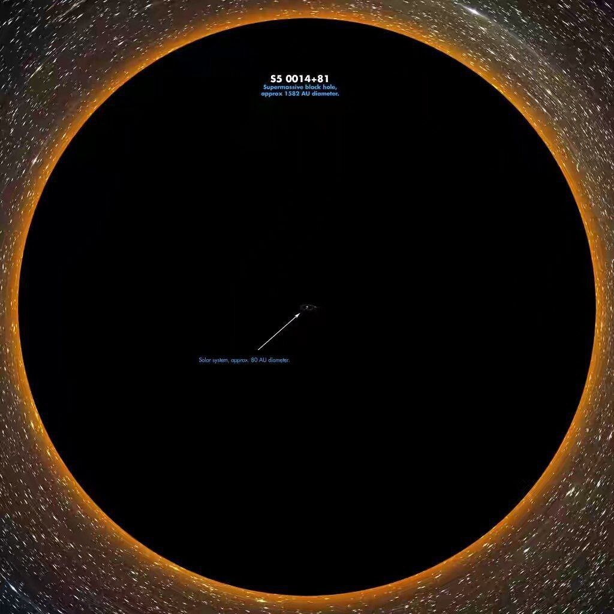

 Черная дыра по сравнению с землей
В созвездии Гончие Псы расположен один из самых интересных космических объектов – очень яркий квазар TON 618, в котором обнаружена таинственная черная дыра. Это самая большая черная дыра во Вселенной, настоящий «монстр», размеры которого в несколько миллиардов раз больше Солнца.
Квазар (англ. quasar) — класс астрономических объектов, являющихся одними из самых ярких (в абсолютном исчислении) в видимой Вселенной. Английский термин quasar образован от слов quasi-stellar («квазизвёздный» или «похожий на звезду») и radiosource («радиоисточник») и дословно означает «похожий на звезду радиоисточник»[1].